0,1g
Precisión
De 0,2 g a 1.200 g
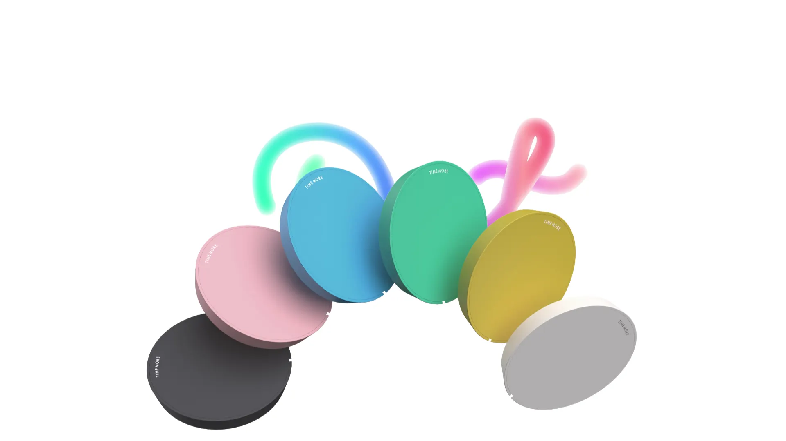
Barista Corner · Chile
Una balanza de bolsillo. Tu teléfono es la pantalla.
$52.000 CLP
Consultar por WhatsAppTamaño compacto
0,1g
De 0,2 g a 1.200 g
80mm
14 mm de alto
50g
77 g con su mat
5.2BT
iOS y Android
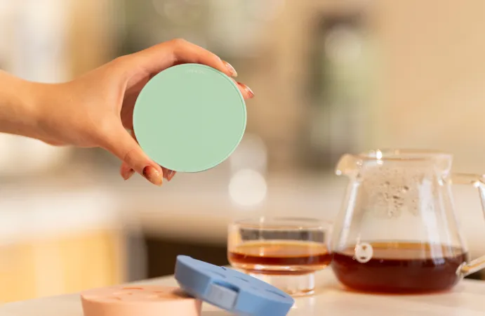
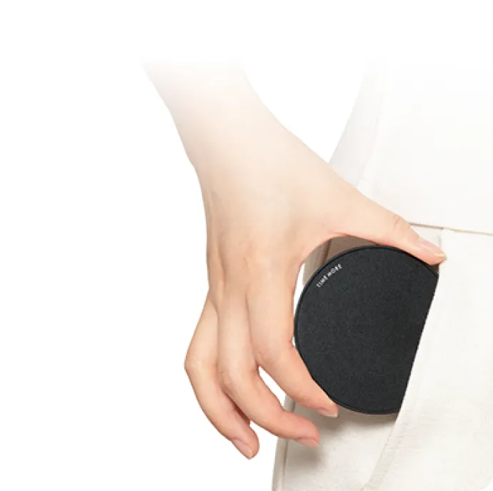
Mat de silicona antideslizante y estuche de viaje incluidos.
Bluetooth 5.2
Se empareja al instante y no se desconecta.
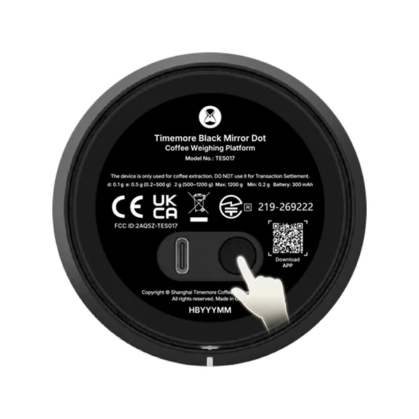
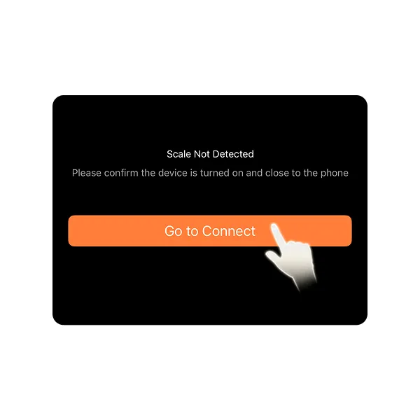
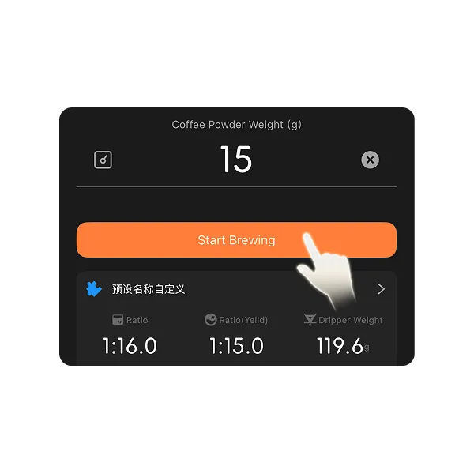
Dos temporizadores
Modo Pourover y modo Espresso, en un mismo flujo.
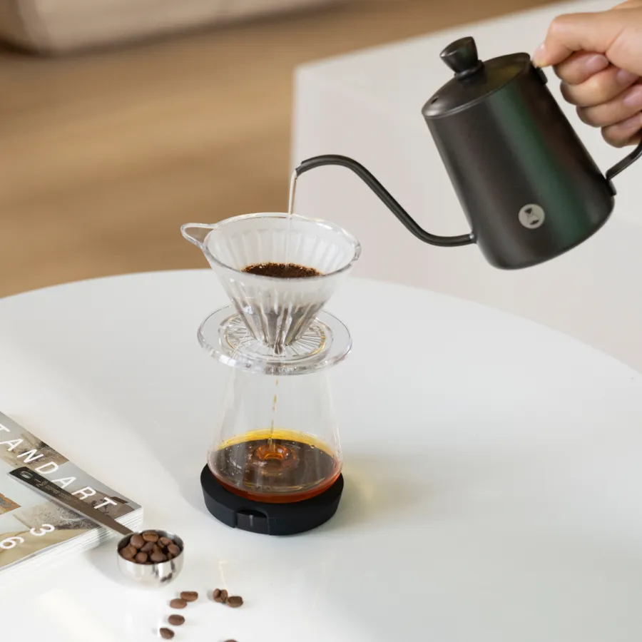
En tiempo real
El flujo de cada vertido, en vivo. Hasta las pausas.
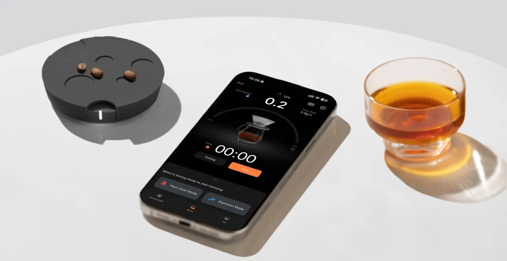
App TIMEMORE
Más funciones, pronto (según Timemore).
IPX3
Un vertido de más no la detiene.
No sumergir ni lavar bajo el chorro.
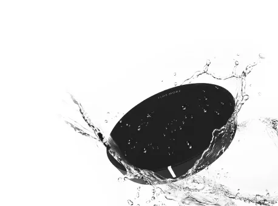
Seis colores
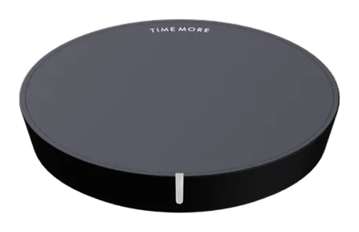
Negro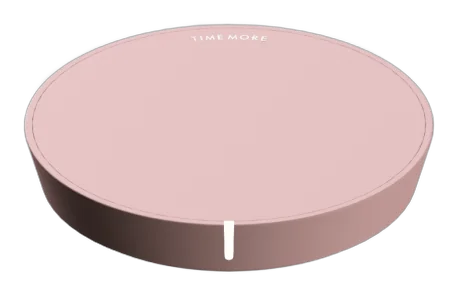
Rosa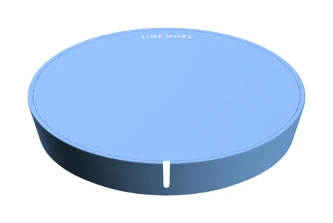
Azul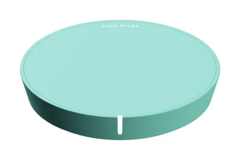
Verde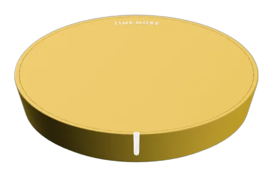
Amarillo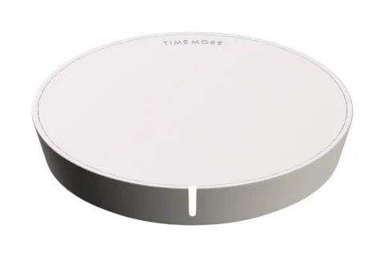
BlancoColores sujetos a disponibilidad en Chile.
Va contigo
Bolsillo de malla para el cable y argolla para mosquetón.
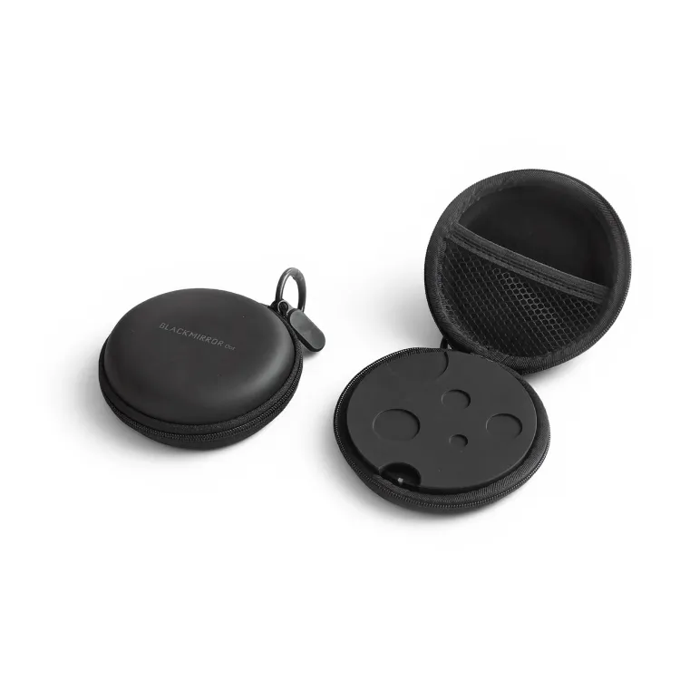
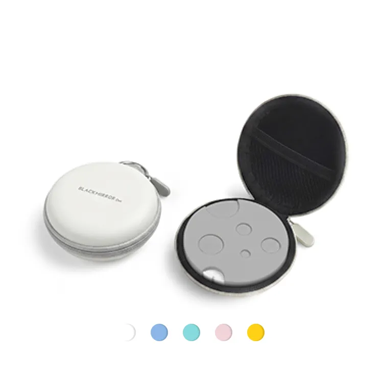
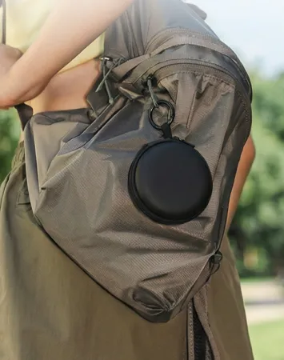
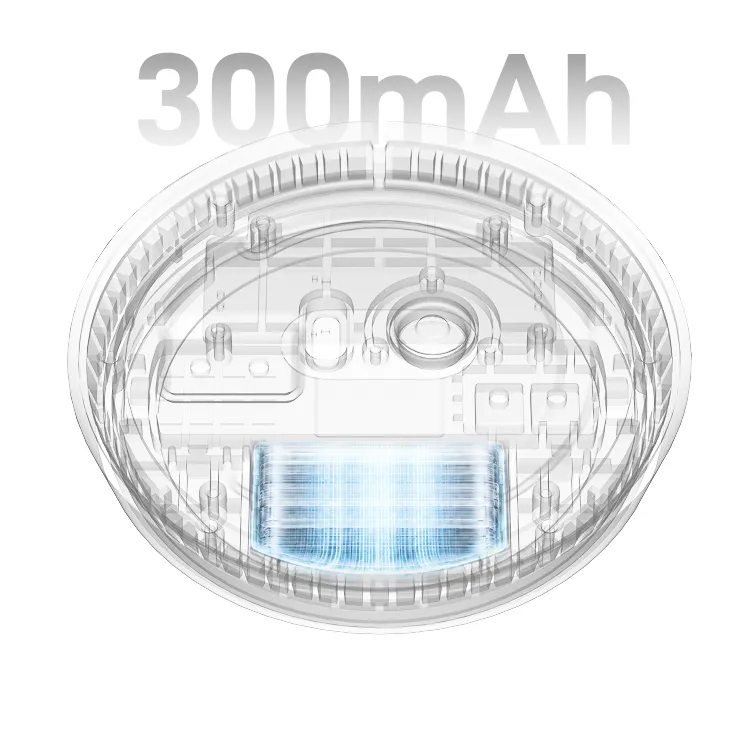
Una carga
Preparaciones de 5 minutos. Un café al día: unos seis meses.
Cargador 5 V, 1–2 A. Sin carga rápida.
Detalles
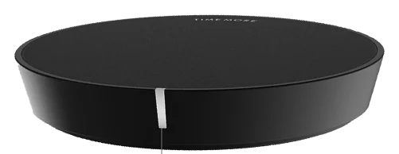
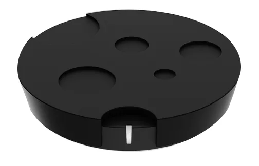
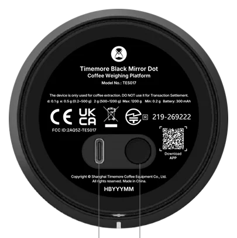
Por qué Dot
$52.000 CLP
Consultar por WhatsAppTe confirmo disponibilidad por WhatsApp.